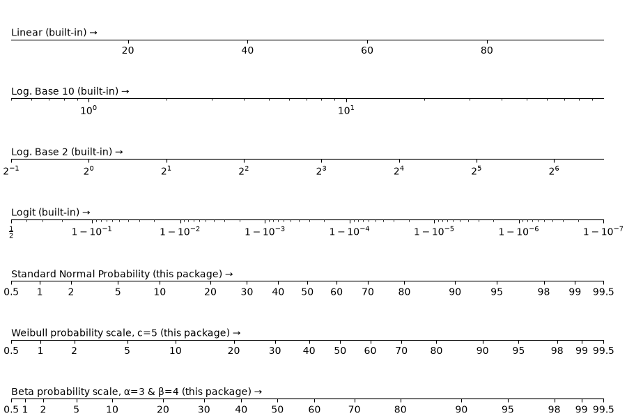

Note
Go to the end to download the full example code.
Exploring matplotlib scale types#
Use matplotlib.axes.Axes.set_xscale() to switch between the built-in
matplotlib scales and the probability scales provided by this package.
from pathlib import Path
from matplotlib import pyplot
from scipy import stats
import probscale # noqa: F401 # the import registers the "prob" scale
beta = stats.beta(a=3, b=4)
weibull = stats.weibull_min(c=5)
scales = [
{"scale": {"value": "linear"}, "label": "Linear (built-in)"},
{"scale": {"value": "log", "base": 10}, "label": "Log. Base 10 (built-in)"},
{"scale": {"value": "log", "base": 2}, "label": "Log. Base 2 (built-in)"},
{"scale": {"value": "logit"}, "label": "Logit (built-in)"},
{"scale": {"value": "prob"}, "label": "Standard Normal Probability (this package)"},
{
"scale": {"value": "prob", "dist": weibull},
"label": "Weibull probability scale, c=5 (this package)",
},
{
"scale": {"value": "prob", "dist": beta},
"label": "Beta probability scale, α=3 & β=4 (this package)",
},
]
N = len(scales)
fig, axes = pyplot.subplots(nrows=N, figsize=(9, N - 1), constrained_layout=True)
for scale, ax in zip(scales, axes.flat):
ax.set_xscale(**scale["scale"])
ax.text(0.0, 0.1, scale["label"] + " →", transform=ax.transAxes)
ax.set_xlim(left=0.5, right=99.5)
ax.set_yticks([])
ax.spines.left.set_visible(False)
ax.spines.right.set_visible(False)
ax.spines.top.set_visible(False)

sphinx-gallery deliberately executes examples without defining __file__
(see sphinx-gallery#166), so this block only runs when the file is executed
as an ordinary script — which is how docs/conf.py regenerates
docs/img/example.png on every documentation build. (sphinx-gallery captures
the figure itself, so no pyplot.show() is needed here.)
if "__file__" in globals():
outpath = Path(__file__).parent.parent.joinpath("img", "example.png").resolve()
fig.savefig(outpath, dpi=300)
Total running time of the script: (0 minutes 0.932 seconds)